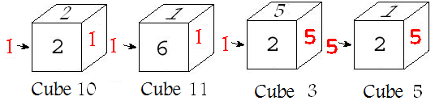

Problem B
Sugar Cubes
Time Limit: 5
Seconds
Pezz likes to chew sugar cubes so much! Since he is fasting today, he wants to play with his N sugar cubes instead of eating them! He assigned indices 1, 2, ..., N to his cubes and also, he has written a random number between 1 and 6 (inclusive) on each side of these N sugar cubes. Now, he wants to arrange the sugar cubes in a row from left to right according to the following rules: Let the sugar cubes in a arrangement be s1, s2, ..., sk, where 1<=k<=N. By si.left and si.right we mean the number on the left side and the number of the right side of sugar cube si respectively. The arrangement must have this property: s1.left<=s1.right<=s2.left<=s2.right<=...<=sk.left<=sk.right. In addition, all the cubes having number x in the arrangement (i.e. x is on the left side or right side of them in the arrangement) should come in increasing sequence of their indices. For clarification, see figures below.
a valid arrangement

an invalid arrangement
Now Pezz is curious about knowing how many arrangements with the above rules exist. Note that two arrangements are different if their sequences of indices from left to right are distinct or the sequences of numbers on the left side and right side of cubes in the arrangements from left to right, i.e. s1.left, s1.right, s2.left, s2.right, ..., sk.left, sk.right, are distinct.
The input starts with a single integer T showing the number of test cases. Each test case starts with a line containing an integer 0< N<=200. Next, there will be N lines of exactly 6 integers denoting the written number on each side of a sugar cube respectively (number i in figure above shows the place of ith number). There will one blank line after each test case.
For each test case, output a line containing the number of different ways that Pezz can arrange sugar cubes modulo 1000000000 in a row, using the above rules.
3 1 1 2 3 4 5 6 1 1 1 1 1 1 1 5 1 1 1 1 1 1 1 1 1 1 1 1 1 1 1 1 1 1 1 1 1 1 1 1 1 1 1 1 1 1 |
3 1 31 |
1st Amirkabir UT Annual Programming Contest - Final Round